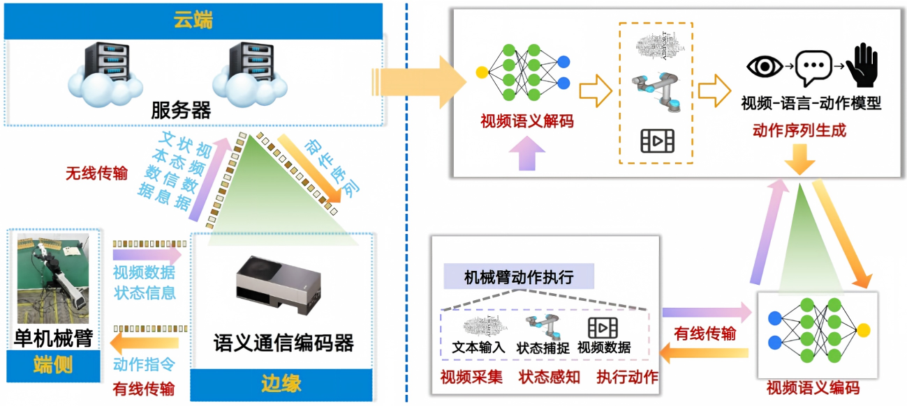

AIC2026 语义通信赛道演示
本作品面向机械臂辅助试管收纳场景，针对现有机械臂云端视觉-语言-动作模型推理方案存在的低带宽下动作卡顿、任务准确率低、模型跨场景环境迁移能力弱等问题，开展面向具身智能的端—边—云协同6G语义通信方法研究，并以机械臂试管跨架转移任务验证6G典型应用场景。
具体而言，本作品构建了"端侧视频采集—边缘语义压缩—云端视觉-语言-动作（Vision-Language-Action, VLA）模型推理—动作回传执行"的端到端闭环。首先，端侧机械臂与边缘设备间采用网线直连，汇聚腕部与夹爪视频及机械臂状态数据，以降低短距接入环节的无线开销。其次，边缘设备基于6G关键技术之一的语义通信，部署轻量化视频语义传输模型，对汇聚后的视频进行实时高效压缩。最后，边缘设备与云端间采用无线传输，将压缩视频码流按UDP协议封装后经WiFi上传至云端服务器，输入云端部署的VLA模型生成下一步动作并回传执行，从而在低带宽条件下保障机械臂动作流畅与任务可靠。
经实验验证，在低至50kbps的带宽条件下，所设计语义传输方案可支撑机械臂流畅工作，相较H.264在上行视频传输环节节省超90%带宽。该成果可支撑远程具身遥操作、多机协同作业等具身智能场景，为6G赋能具身智能产业提供可行思路。

注：测试任务为机械臂试管跨架转移，上行链路限速 50 kbps，每组 20 次试验取均值。雷达图数值已进行归一化处理以便对比。